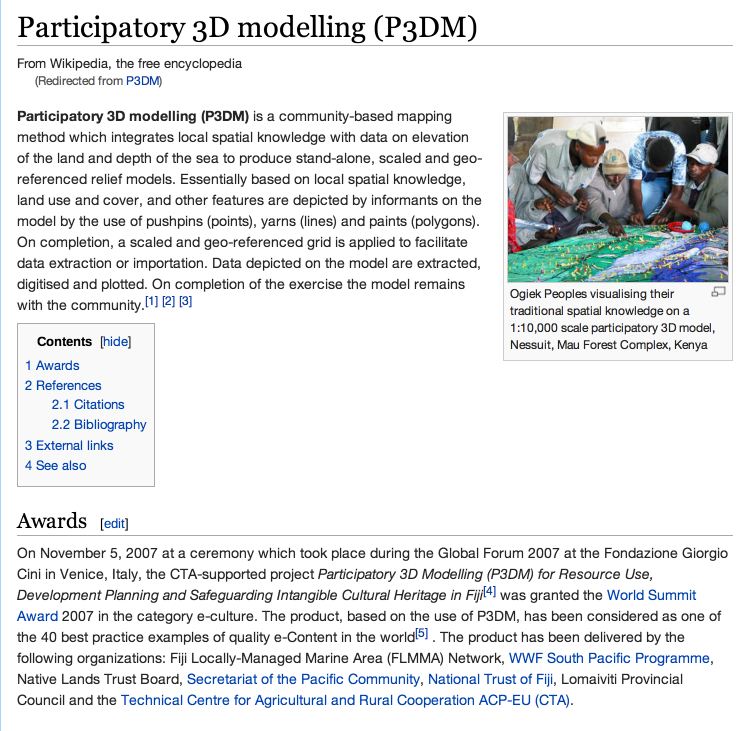
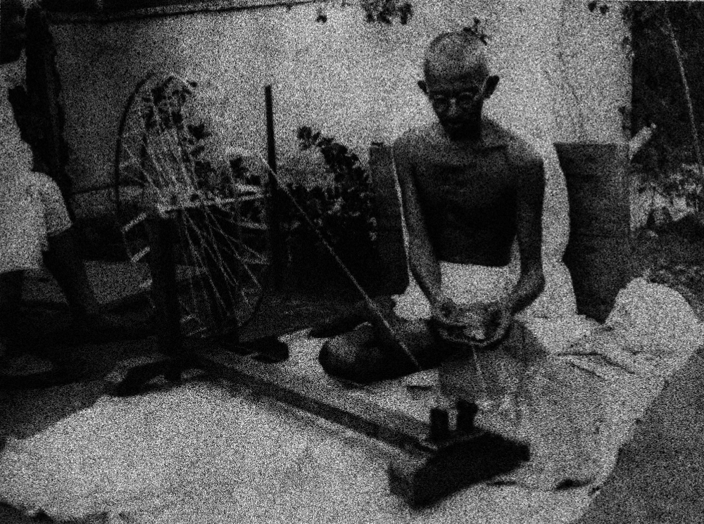

@tmcw
mapschool.io
GIS Education
ArcGIS Education
ArcGIS© Education
✍ clicking buttons
textbook$
✔ memorizing projections
Wikipedia GIS Articles suck

On November 5, 2007 at a ceremony which took place during the Global Forum 2007 at the Fondazione Giorgio Cini in Venice, Italy, the CTA-supported project Participatory 3D Modelling (P3DM) for Resource Use, Development Planning and Safeguarding Intangible Cultural Heritage in Fiji[4] was granted the World Summit Award 2007 in the category e-culture. The product, based on the use of P3DM, has been considered as one of the 40 best practice examples of quality e-Content in the world[5] . The product has been delivered by the following organizations: Fiji Locally-Managed Marine Area (FLMMA) Network, WWF South Pacific Programme, Native Lands Trust Board, Secretariat of the Pacific Community, National Trust of Fiji, Lomaiviti Provincial Council and the Technical Centre for Agricultural and Rural Cooperation ACP-EU (CTA).

ragequit the academic corporate gibberish
mapschool is a start
be the gis education you want to see in the world
1 Page
Public Domain
English + Italiano + Español
16 Contributors
concepts, not products
english, not jargon
improving, not growing
furtherreading.md curates further reading